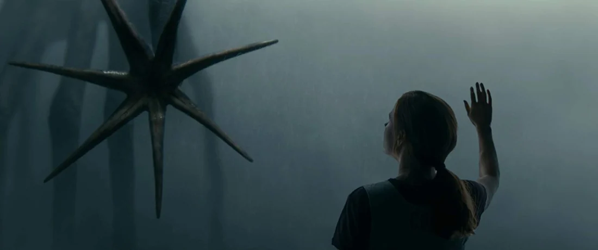
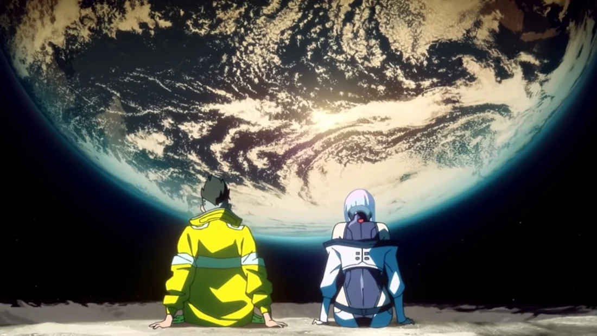
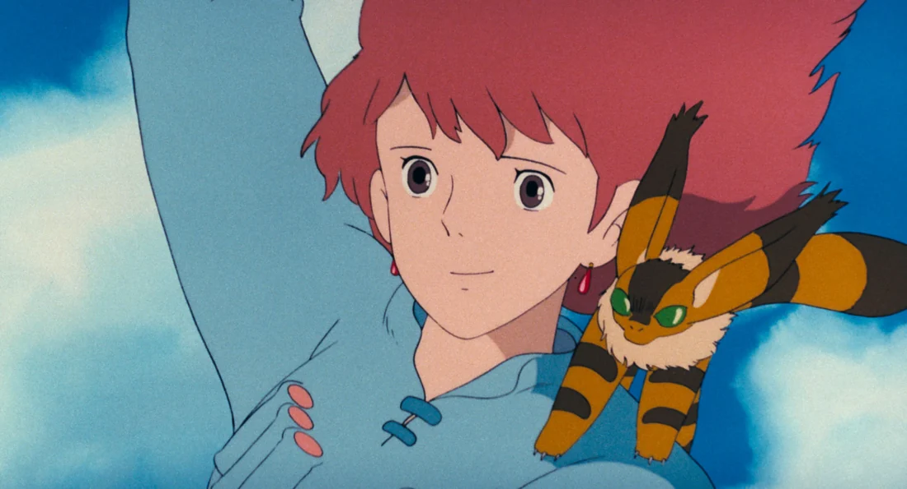
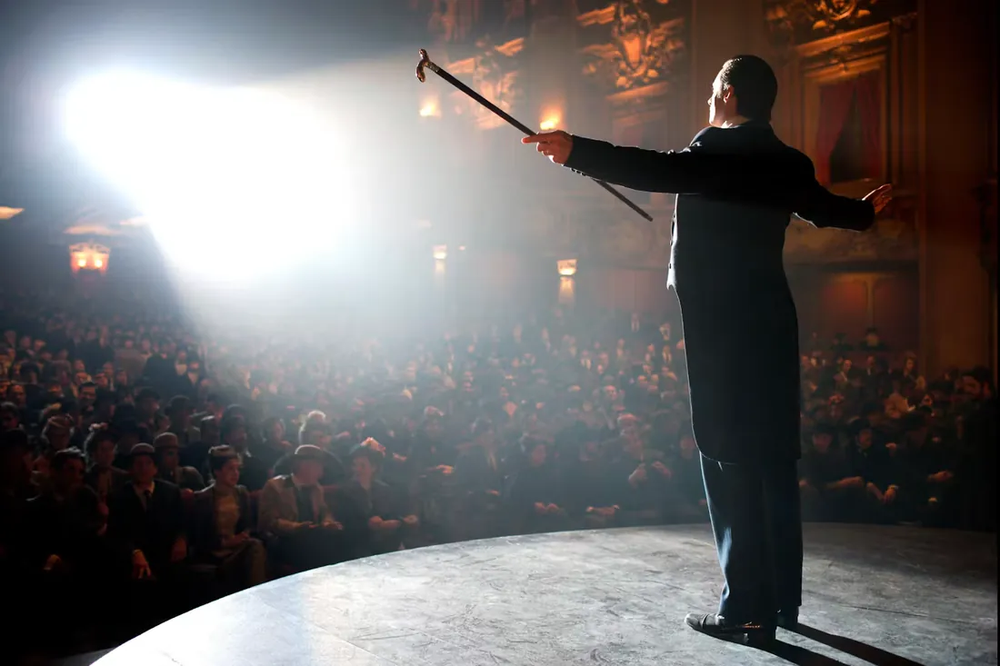

The Summer Day
Doesn't everything die at last, and too soon?
Tell me, what is it you plan to do
with your one wild and precious life?
—Mary Oliver
Read the poem ↗Use a piece’s Move button and the arrow keys to rearrange it. Hold Shift for larger steps. Press Escape during a drag to cancel. Use the Open button to view a piece.
Doesn't everything die at last, and too soon?
Tell me, what is it you plan to do
with your one wild and precious life?
—Mary Oliver
Read the poem ↗

Piano / soundtrack

It is a ceremony, the blowing of candles, the cutting of a cake—the mess of cream and sponge in your mouth. The taste is sweet and familiar, like a newly formed wish, fashioned from all the ones you’ve made before.
—Lang Leav
More by Lang Leav ↗NIKI

Max Richter
Porter Robinson & Madeon
AUN J-CLASSIC ORCHESTRA